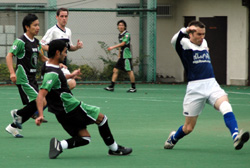
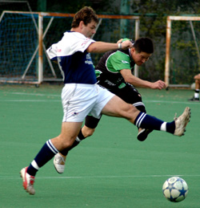
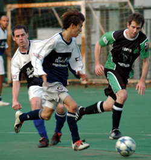

|
St Mary's 28th Oct. The BFC were undefeated in the current season, conceded very few goals and had been described by several good judges and even more poor judges as “revitalised”. The BFC were missing a few key players and surprisingly showed up for their acid test with a bare 11. The Hibs had a strong squad of 14, but also had a few key personnel not available.
We began strongly and Tomo was continuing with his top form skipping past defenders and creating openings. One of his movements saw Kuni H put through one on one with the keeper, Kuni steadied and slid it back post but it skipped inches past the post to sighs from the Hibs faithful. 20 minutes in and it was still 0-0, but the Hibs had dominated play, and we probably deserved to be at least one up.
Keita and Yohei came on at the 20-minute mark to immediate effect. Yohei skipped past his marker and slid in a great low cross that Keita finished with aplomb. This was Keita’s first goal since fracturing his neck late last season and the whole team was over the moon for him, and at finally breaking the deadlock. Rio then tried to skip past a marker just inside his own half, but the new-improved nimble Keita ducked in and stole possession. He quickly knocked it wide to Yohei who picked out Sam in the centre, who turned well and slid it low past Jerky’s near post to put us 2-0 up into half time.
Into the second half and some attacking corner scraps fell to Naoki who struck it sweetly on the volley from 18 yards into an open net. Unbeknown to almost everyone Jerky had gone down with an Achilles’ injury. The Hibs captain Keita decided in either a moment of madness or benevolence (take your pick) to forgo the goal and have a drop ball. Soon after a quality Hibs move commencing in our own half saw Yama release Bevan wide on the left and he slid it across goal for Yama to tap in.
The BFC then had their best period as midfield dynamo Shosuke became more involved and dribbled at defenders, causing some headaches for his markers. One of these runs saw him bumped outside the box and again inside the box, which was enough for him to go down. Ref Ruari pointed to the spot for another BFC PK (their 6th or 7th this season!). Penalty king Phil Lowes sent Hitoshi the wrong way and those holding Hibs defenders in their TML fantasy league team sighed at the loss of their 3 points for a clean sheet. Sam then signed of his brief but fruitful Hibs career with a dink over the keeper that Jerky parried and Ryo and Jerky decided to play a game of head/ slap volleyball on the goal line that ended with the ball nestling in the back of the net.
The match was played in good spirit and ref Ruari did an excellent job of controlling play, got the tough decisions correct and dealt with the liberal doses of moaning from both teams with ease. He is an excellent addition to the TML refereeing ranks. The Hibs continue their winning run and excellent scoring rate. The season is a long way from over and the Swiss, YCAC and BFC have enough talent to challenge the Hibs for the title.
Report by Bevan Colless.
|